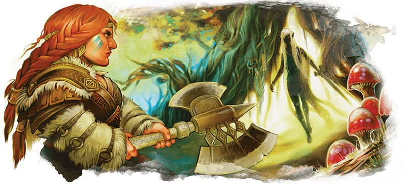

Voie du berserker
Vous êtes un berserker. Le frisson de la bataille vous transforme en un guerrier possédé par une frénésie incontrôlable et dévorante. Si vous voulez jouer un personnage qui vit pour le combat, un survivant implacable, et être le plus effrayant et le plus intimidant sur le champ de bataille, le berserker est la bonne voie.
Un personnage peut devenir un berserker pour plusieurs raisons. Bien sûr, la voie du berserker est basée sur les mythiques berserkers nordiques qui portaient des peaux d'ours et combattaient dans un état de « transe ». La fureur passée, ces guerriers tombaient dans une profonde léthargie qui pouvait durer des jours. Certains pensent que cette fureur au combat était due à l'alcool et à des drogues hallucinogènes. Vous pourriez alors jouer le rôle d'un berserker dont la frénésie est provoquée par une potion magique ou une substance qui rend fou. Mais un berserker pourrait aussi être une personne possédée par un démon, un démon ou tout autre esprit maléfique. Lorsque la bataille commence, l’esprit prend parfois le contrôle du berserker et lui donne un incroyable pouvoir martial au prix de l’affaiblissement de son essence vitale. Plus près de Docteur Jekyll et Mister Hyde, le berserker pourrait aussi être à cheval entre les deux archétypes précédents, mélangeant l'alchimie et un alter-ego sauvage. Bien entendu, vous pouvez jouer un berserker sans ne rien incorporer de tout cela et n'être qu'un guerrier enclin à des crises de frénésie lorsqu'il défend ceux à qui il tient.
Mais peu importe l’histoire de votre berserker, voici quelques précisions sur le fonctionnement de cette sous-classe à connaitre avant de vous engager à la jouer.
Capacités de la voie du berserker
En quelques mots, le berserker est la classe de barbare poussée à l'extrème. Il améliore les forces et la saveur naturelles du barbare tout en soulignant fortement les faiblesses de cette classe. Le barbare a accès à quatre capacités de sous-classe, en plus des capacités de classe, qu'il acquiert à des intervalles assez réguliers aux niveaux 3, 6, 10 et 14. En résumé, ces capacités de sous-classe permettent :
- D'entrer dans une frénésie qui améliore le pouvoir offensif de votre Rage.
- D'être immunisé contre la peur et certains enchantements lorsque vous êtes en Rage.
- D'utiliser votre présence effrayante pour terrifier l'un de vos adversaires.
- De réagir aux dégâts en attaquant la créature qui vous a blessé.
Avantages de la voie du berserker
Le berserker est une classe simple. C’est un excellent choix pour de nouveaux joueurs à D&D, car il est simple mais offre tout de même des choix ; la plupart de vos capacités sont actives plutôt que passives, ce qui signifie que vous devez choisir le bon moment pour les utiliser plutôt que de simplement en tirer un avantage. Elles sont aussi de nature offensive, comme le fait de gagner une attaque supplémentaire pendant votre frénésie ou de mener des attaques en réaction pendant les tours ennemis. Mais les capacités défensives du berserker ne sont pas en reste et sont plutôt puissantes. Rage inébranlable accorde l'immunité aux charmes, ce qui élimine l'un des pièges classiques du barbare : être dominé par un vampire ou un sorcier maléfique et être contraint de combattre contre son propre groupe.
Mais malgré les caractéristiques individualistes et le thème narratif axé sur le combat du berserker, vous pouvez réellement jouer en équipe, en particulier avec Présence intimidante. Une fois que vous avez cette capacité, vous pouvez toujours contribuer aux combats, même ceux qui rendent difficile l'utilisation de vos capacités martiales. En effrayant une créature, vous réduisez sérieusement ses capacités offensives et restreignez ses mouvements, ce qui permet à votre groupe de la vaincre plus facilement. Cela s’applique également aux situations sociales, dans lesquelles les barbares souffrent, généralement.
Inconvénients de la voie du berserker
La plus grande force du berserker, Frénésie, est aussi sa plus grande faiblesse. Entrer en frénésie donne par la suite un niveau d'épuisement. Or un seul niveau d'épuisement confère un désavantage à tous les jets de caractéristique, ce qui est gênant. Avec deux niveaux d'épuisement, vos mouvements sont divisés par deux, ce qui n'aide pas pour entrer dans la mêlée. Et avec trois niveaux d'épuisement, vous avez un désavantage aux jets d’attaque et de sauvegarde, un effet dévastateur pour tout combattant au corps à corps ! Un berserker ne devrait donc jamais avoir plus de 2 niveaux d'épuisement à cause de Frénésie, ce qui limite l'utilisation de Frénésie à deux usages par repos long, une sérieuse restriction pour une capacité principale. Et tous ces inconvénients s’accumulent avec l'épuisement dû aux monstres ou à l’environnement, ce qui laisse supposer que les berserkers souffriront plus que d'autres des climats difficiles.
La seule façon de remédier à l'épuisement consiste à effectuer un repos long (qui élimine un seul point d'épuisement) ou de bénéficier d'une restauration supérieure (qui n'élimine aussi qu'un seul point d'épuisement). Alors, à moins d'avoir un clerc niveau 9 dans votre groupe ou une réserve importante de potions de vitalité, la capacité principale de votre sous-classe est un outil à utiliser avec parcimonie.
Si vous le pouvez, proposez à votre MD d'adopter l'une des règles maisons suivantes, pour votre bien :
- Tous les niveaux d'épuisement sont éliminés après un repos long.
- La première utilisation de Frénésie après un repos long n'entraîne pas un niveau d’épuisement (mais toutes les utilisations ultérieures si).
Exemple de personnage
Si vous construisez un berserker à partir du niveau 1, vous devez choisir une race bien équilibrée, comme un humain ou un demi-elfe, ou une race orientée vers la Force, comme un demi-orc ou un nain des montagnes. La Force devrait être votre caractéristique la plus élevée, suivie par la Constitution. Le Charisme en troisième position est utile pour la compétence Intimidation (sans parler de la capacité Présence intimidante au niveau 10). De plus, au lieu de vous fier à Défense sans armure, investissez dans la meilleure armure intermédiaire que vous pouvez vous payer. Il s'agit généralement d'une armure d'écailles au niveau 1, mais vous devriez être constamment à la recherche de nouvelles armures intermédiaires.
Comme d'habitude, le background de votre personnage dépend de vous. Vous pouvez créer toutes sortes d'histoires intéressantes et de personnages bizarres en associant des historiques improbables (comme sage ou acolyte) à une classe aussi thématique que le barbare.
Achetez une hache ou une épée à deux mains, quelques armes de lancer comme des hachettes ou des javelines, et une armure d'écailles. Si votre défense vous inquiète toujours, vous pouvez sacrifier un peu de pouvoir offensif et acheter une hache d'armes ou une épée longue et un bouclier, au lieu d’une hache ou d’une épée à deux mains.
Lorsque le moment est venu de choisir un don, Maître des armes à deux mains est un choix idéal pour un barbare agressif comme vous. Il colle bien avec l'avantage aux jets d'attaque obtenu par Attaque téméraire. Bagarreur de tavernes est un don amusant et thématique ; il n'est exceptionnellement puissant mais facilite la lutte à mains nues.
De plus, une fois que vous aurez atteint le niveau 5 du barbare, vous pouvez vous écarter de votre voie actuelle et vous multiclasser en guerrier durant trois niveaux. Ces trois niveaux de guerrier vous permettent de choisir le puissant style de combat Arme à deux mains, Fougue pour plus d'attaques et la capacité Critique amélioré si vous choisissez la sous-classe champion, ce qui permet une bonne synergie avec vos capacités offensives de barbare.

Basé sur un article de James Haeck, traduit par blueace